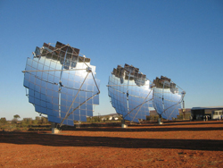
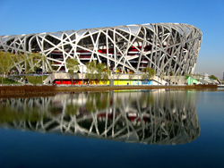
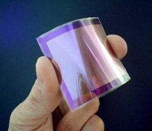
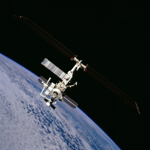
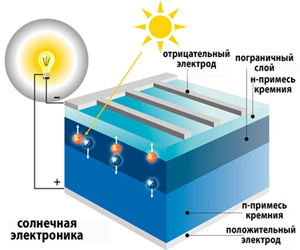
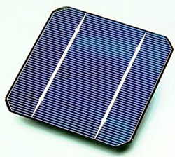
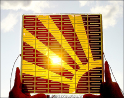
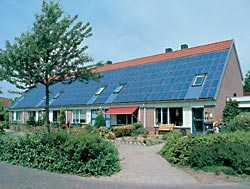
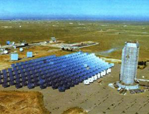

История развития гелиоэнергетики

{kind=link}

Из всех отраслей народного хозяйства энергетика оказывает самое большое влияние на нашу жизнь. Энергообеспечение - это основа нормального функционирования любого производства, а, следовательно, и всей человеческой цивилизации. Тепло и свет в домах, работа станков и агрегатов на производстве, транспортные потоки и сельская страда – все это многочисленные лики энергетики. Различные технические достижения давно уже стали для нас частью жизни, однако все они возможны только при условии достаточного и доступного энергообеспечения, за счет освоения альтернативных видов энергии, новых технологий добычи и переработки первичных энергоносителей.
Производство энергии из традиционных источников, учитывая все возрастающую потребность в ней, губительно сказывается на экологическом состоянии планеты. Тепловые электростанции, выделяющие в процессе работы огромные количества углекислого газа, вызывают парниковый эффект, являющийся причиной глобального потепления климата. Выбросы оксидов серы и азота достаточно велики даже при наличии дорогостоящих очистных сооружений. В соединении с атмосферной влагой, эти оксиды вызывают кислотные дожди, приводящие к гибели лесов, уменьшению рыбных запасов, снижению плодородности почвы. В кислой воде повышается растворимость тяжелых металлов и их соединений, которые могут попадать в питьевую воду. Еще более опасны и непредсказуемы атомные электростанции, выбрасывающие в атмосферу около 26 тонн радиоактивных отходов в день. Кроме этого велик риск аварий на АЭС, могущих стать катастрофой для всего человечества. Все это вызывает справедливую тревогу экологов.
Другой проблемой традиционной энергетики, использующей главным образом ископаемые виды топлива - нефть, газ, уголь, является истощение их запасов, которые далеко не бесконечны. Поэтому их называют невозобновляемыми источниками энергии. Потребление нефти в мире в течение одного года эквивалентно ее количеству, образующемуся за 2 млн. лет. Истощение ресурсов повышает себестоимость и трудоемкость добычи, а также сокращение объемов добываемого топлива. Запасов же урана, по подсчетам специалистов, хватит не более, чем на 50 лет.
Сокращение запасов природных энергоресурсов, неизбежное загрязнение окружающей среды поставили человечество перед необходимостью поиска и использования новых возобновляемых источников энергии. Источников энергии на Земле много, но их уже сейчас катастрофически не хватает. По прогнозам экспертов к 2020 году энергии потребуется почти в три раза больше, чем в настоящее время. Кризис 70-х годов двадцатого века стал первым вестником энергетического кризиса, вызвавшим повышенный интерес к альтернативным возобновляемым источникам энергии. Такими источниками являются:
-солнечная энергия;
-энергия ветра;
-гидроэнергия;
-энергия биомассы.
Солнечная энергетика имеет на сегодняшний день самые широкие перспективы. Солнце – это практически неисчерпаемый источник возобновляемой экологически чистой энергии, питающей все живое на Земле. Количество солнечной энергии, падающей на поверхность Земли за неделю превышает энергию мировых запасов нефти, газа, угля и урана вместе взятых.
{kind=link}

«Солнечное электричество» может стать альтернативой органическим видам топлива, запасы которых стремительно уменьшаются. Существующих запасов угля хватит на ближайшие 50-100 лет, а солнечной энергии еще на 2-3 миллиарда лет. Солнце – это основной источник энергии на Земле. Благодаря Солнцу текут реки, дует ветер, под его живительными лучами вырастает 1 квадриллион тонн растений, являющихся пищей для триллионов тонн живых организмов. Запасы торфа, угля нефти, газа, активно используемые человечеством в качестве источника энергии – это тоже работа Солнца. Растения и морские водоросли потребляют всего 3-4 процента поступающей от Солнца энергии. Остальная часть солнечной энергии просто рассеивается, расходуясь лишь на поддержание комфортной для жизнедеятельности организмов температуры в глубинах океана и на земной поверхности. В настоящее время человечество потребляет лишь одну десятитысячную часть той энергии, которую Солнце направляет к Земле. И, если бы человек смог взять у Солнца хотя бы один процент поступающей от него энергии, то энергетическая проблема не вставала бы перед человечеством еще многие века. Уже более полувека Солнце обеспечивает энергией космические аппараты на орбите. Экологически чистая и неиссякаемая энергия Солнца – это будущее и земной энергетики.
Главный олимпийский стадион в Пекине «Гнездо птицы» вошел в десятку лучших архитектурных сооружений 21 века. Его спортивные арены впечатляют не только своей оригинальной формой, но и самыми современными техническими решениями. Освещение стадиона обеспечивается энергией от солнечных батарей, размещенных на крыше и стенах сооружений.
{kind=link}
Строительство энергосберегающих домов с солнечными батареями становится все более популярным в странах Европы. Пока эта энергия довольно дорогая. Но пройдет 5-10 лет и выработка электроэнергии солнечными батареями станет рентабельной не только в Космосе, но и на Земле.

Явление фотоэффекта, представляющее собой излучение электронов под воздействием солнечного света, было впервые замечено еще в 1839 году А. Беккерелем, однако полностью разработана эта теория оказалась лишь в 1905 году Альбертом Энштейном, за что он и получил Нобелевскую премию. Через сорок четыре года после открытия Беккереля Чарльз Фриттс в 1883 году создал первый солнечный модуль. Основой изобретения был покрытый тонким слоем золота селен. КПД этой батареи был не более 1 процента и до создания современных солнечных батарей было еще далеко. Лишь в 30-х годах 20 века советским физикам удалось впервые получить электрический ток, используя явление фотоэффекта. В физикотехническом институте, которым руководил выдающийся ученый академик Иоффе были созданы первые солнечные сернисто-таллиевые элементы. КПД этих первых солнечных элементов составлял всего 1 процент, т. е. в электрический ток преобразовывался всего лишь 1 процент падающей на элемент солнечной энергии. Но начало развитию солнечной энергетики было уже положено. Следующим шагом на пути создания солнечных преобразователей энергии стало изобретение в начале 50-х годов 20 –го века кремниевого солнечного элемента американцами. Американские ученые Пирсон, Фуллер и Чапин открыли и запатентовали кремниевый солнечный элемент с КПД около 6 процентов. Относительно высокой степени развития, достаточной для широкого практического применения, солнечные элементы достигли лишь в начале 50-х годов 20-го века. В 1957 году в СССР был запущен первый искусственный спутник с применением фотогальванических элементов, а в 1958 г. США произвели запуск искусственного спутника Explorer 1 с солнечными панелями. С 1958 года кремниевые солнечные батареи стали основным источником энергии для космических кораблей и орбитальных станций.
В 1970 году в СССР Жоресом Алферовым и его соратниками была создана первая высокоэффективная гетероструктурная (с применением галлия и мышьяка) солнечна

я батарея. К середине 70 годов прошлого века удалось поднять КПД солнечных элементов до 10 процентов. После этого наступила полоса застоя почти на два десятилетия. Для использования в космических аппаратах 10-ти процентного КПД вполне хватало, но для применения на Земле производство солнечных батарей в то время было нецелесообразным, так как необходимый для этого кремний стоил очень дорого (до 100 долларов 1 кг), сжигание тогда еще значительных запасов органического топлива было гораздо рентабельней. Это привело к сильному сокращению финансирования исследований в области солнечной энергетики и сильно затормозило появление новых разработок и технологий. Как справедливо было замечено академиком Жоресом Алферовым на собрании АН СССР, если бы на развитие альтернативной энергетики было выделено хотя бы 15 процентов средств, вложенных в атомную энергетику, то атомные электростанции были бы вообще не нужны. И это действительно было бы возможно, учитывая тот факт, что несмотря на минимальное финансирование исследований в области солнечной энергетики нашим ученым удалось поднять КПД солнечных элементов к середине 90-х годов до 15 процентов, а к началу 21 века уже до 20 %.Используя идею Ga-As-солнечных элементов Applied Solar Energy Corporation (ASEC) уже в 1988 г. создали батарею с эффективностью 17 процентов, что на тот момент было значительным достижением. В 1993 году КПД Ga-As солнечного элемента удалось довести до 19% и в том же году ASEC выпустили фотоэлектрическую панель производительностью уже в 20%.
Серьезным позитивным сдвигом в развитии солнечной энергетики послужило создание американцами в 90-х годах прошлого столетия особых цветосенсибилизированных типов солнечных батарей, более эффективных, чем применяемые ранее. Этот новый тип батарей более экономически выгоден, да и производить их проще. На сегодняшний день основная масса выпускаемых солнечных батарей имеет КПД чуть более 20 процентов. В 1989 году было создано устройство, работающее с КПД более 30 %. В 1995 году появились первые экспериментальные разработки тонкопленочных фотогальванических элементов, в качестве основы для которых использовался тончайший пластик (thin-film photovoltaic cell).
{kind=link}

Основным материалом для производства солнечных элементов является достаточно распространенный химический элемент – кремний (Si), составляющий почти четвертую часть массы земной коры. Однако встречается он в природе в связанном виде. Это обычный песок (SiO2), покрывающий километры пляжей, песок, которым наполняют детские песочницы, песок, используемый при производстве бетона или стекла. Технология извлечения чистого кремния (силициума) сложна и настолько дорога, что стоимость чистого (не более одного грамма примесей на 10 кг продукта) силициума сопоставима со стоимостью обогащенного урана, необходимого для работы атомных электростанций. И хотя природные запасы кремния больше запасов урана почти в 100 000 раз, качественного чистого кремния, из-за сложности получения, производится почти в 6 раз меньше, чем уранового топлива для АЭС. Основные трудности в производстве чистого кремния связаны, прежде всего, с несовершенством технологий извлечения и очистки, до сих пор остающимися на уровне 50-х годов 20-го века. Так называемый, «грязный» кремний (содержащий более 1 процента примесей) добывается электродуговым методом, что значительно проще технологии извлечения урана из породы. Поэтому стоимость природного урана выше стоимости «грязного» кремния (немногим более 1 доллара за килограмм) почти в 10 раз. В процессе обогащения природного урана до необходимого для атомного топлива уровня, его стоимость возрастает до 400 долларов за килограмм и становится сопоставимой с ценой «солнечного» кремния, используемого в солнечных элементах. Подобная, в общем-то невысокая, стоимость ядерного топлива обусловлена значительными средствами, вложенными в развитие атомной энергетики, современными технологиями его добычи и обогащения. Несовершенство же технологий солнечной энергетики не только существенно влияет на стоимость конечного продукта, но и приводит к низкому выходу чистого кремния, повышенным энергозатратам и, что немаловажно, к экологической опасности. Так, из тонны кварцевого песка, содержащего около 500 кг кремния, при применении действующих сегодня технологий электродугового извлечения и хлорсилановой очистки, получается от 50 до 90 кг «солнечного» кремния. Получение всего одного килограмма солнечного сырья требует количества энергии, эквивалентного энергии, расходуемой на непрерывную работу электрочайника мощностью 1 киловатт в течение 250 часов. Непонятно, чем можно объяснить такое положение дел в солнечной энергетике нашей страны, поскольку уже давно существуют более прогрессивные технологии, например, карботермический цикл, применяемый для получения чистого кремния немецкой фирмой Siemens. В результате применения этой технологии энергозатраты снижаются на порядок и в 10-15 раз увеличивается производительность, что приводит к уменьшению стоимости конечного продукта до 5-15 долларов за 1 килограмм. В нашей стране находятся самые крупные запасы «особо чистых кварцитов», необходимых для применения немецкой технологии получения чистого кремния, поскольку обычный песок для нее уже не годится. И из этого Россия может извлечь дополнительный доход.
Преобразование солнечной энергии в электрическую возможно двумя способами:
-фотоэлектрическое преобразование (прямое преобразование лучистой энергии Солнца в электрическую);
-фототермическое преобразование, предполагающее преобразование световой энергии сначала в тепловую, а затем,например, с помощью пара, в электрическую.
Рассмотрим вкратце принцип действия солнечных элементов. Преобразование энергии в солнечных элементах (ФЭП) происходит вследствие, так называемого, фотовольтаического эффекта в неоднородных полупроводниках при воздействии на них солнечного излучения. По своему строению солнечный элемент напоминает бутерброд, который состоит из двух полупроводниковых пластинок: n и p. Внешняя n-пластинка содержит избыток электронов, а внутренняя p-пластинка – недостаток. Попадание фотона света на внешнюю пластинку вызывает выбивание из нее электрона и переход его на внутреннюю пластину, что и создает электрический ток.
{kind=link}

{kind=link}

Выпускаемые в настоящее время солнечные элементы представляют собой достаточно громоздкую конструкцию: при толщине батареи в несколько сантиметров ее вес достигает десятков килограммов. Для получения достаточного количества энергии такие элементы должны занимать значительную площадь: так, элемент размером метр х метр имеет мощность всего около 100 Вт (к примеру, для котла мощностью в 2 киловатта необходима площадь поверхности крыши в 20 кв. метров). Невелик и коэффициент полезного действия такой батареи (менее 20%), что объясняется снижением генерируемой мощности при нагревании, которого избежать в принципе невозможно, поскольку элемент работает на солнце. К 2007 году эффективность кремниевых моно- и поликристаллических фотоэлементов достигла 30 процентов. Другие технологии, как менее эффективные, почти не развивались до настоящего времени. Повышение КПД – основная задача ученых, занятых проблемами солнечной энергетики, однако серьезного прорыва в технологиях кремниевых солнечных батарей в ближайшее время не предвидится. Будущее солнечной энергетики в настоящее время в развитии нанотехнологий, как наиболее прогрессивных и революционных областей современной науки. Развитие технологий солнечной энергетики происходит по пути совершенствования материала слоев полупроводников. Наибольшие перспективы, открывающие качественно новый уровень в создании солнечных элементов, имеют в настоящее время аморфный и микрокристаллический кремний, из которых возможно выращивать пленки, толщиной всего несколько нанометров. Фотогальванический элемент, представляющий из себя две такие пленки, осажденные одна на другую на стеклянной поверхности, обладает высокой электропроводимостью и пригоден для длительного применения. Тем не менее практического применения эти элементы до сих пор не получили, поскольку технология, позволяющая массово выпускать такие элементы еще не создана. Эта задача успешно решается в исследовательском центре города Юлих в Германии. Обычные кремниевые солнечные элементы создаются по отдельности и лишь затем соединяются в солнечные батареи. В случае же тонкопленочной технологии все происходит в обратном порядке: сначала выращивается пленка большой площади и наносится на стекло вместе с другими слоями и лишь затем режется лазером на полоски, соединяемые электрическими контактами. Ученым из Юлиха удалось наиболее близко подойти к созданию промышленной технологии выпуска солнечных модулей площадью 30х30 см и с КПД около 10%. Стоимость выпускаемых в настоящее время солнечных элементов - около 300 евро за 100 ватт мощности. Использование тонкопленочной технологии приведет к снижению стоимости элементов вдвое – через 5-10 лет и втрое – через 15.
Назревшая в последние годы необходимость массового использования альтернативных источников энергии, к которым относится и солнечная энергия, привела к изменению направления разработок в области солнечной энергетики. Ученые уже не идут по пути увеличения КПД солнечных батарей. Приоритетом является пригодность к использованию, удобство и простота монтажа и, как следствие, рентабельность производства. Тонкопленочные фотоэлементы вполне отвечают этим требованиям, поскольку это принципиально новый вид солнечных элементов, основой которых является не дорогостоящий чистый кремний, а тонкий слой других полупроводников. Эти элементы, представляющие собой тонкую пластину из стекла с нанесенными слоями полупроводников либо фольгу, можно размещать на поверхности любой конфигурации, наносить на ткани, даже использовать вместо жалюзи. Коренным образом изменилась и технология нанесения слоев полупроводника. Ранее нанесение осуществлялось путем вакуумного напыления, в настоящее же время разработана инновационная технология – печатание специальными чернилами, содержащими смесь полупроводниковых наночастиц. Применение новой технологии и увеличение объемов производства привели к значительному удешевлению солнечной электроэнергии (до 1 доллара за ватт), что меньше стоимости атомной энергии.
Высокая стоимость солнечной мощности основное препятствие широкому распространению этого альтернативного возобновляемого источника энергии. Однако технический прогресс берет свое. И если в начале70-х годов прошлого века стоимость одного ватта солнечной энергии составляла около ста долларов, то к середине 80-х годов стоимость одного ватта снизилась на порядок. Сейчас 1 ватт солнечной энергии стоит приблизительно 5-6 долларов. Но и это достаточно высокая цена в сравнении с ценами на традиционные виды топлива. Теплоэлектростанции вырабатывают электроэнергию из расчета 2,1 доллара за ватт, атомная же энергия еще дешевле. Поэтому, несмотря на наличие технологий получения, огромное количество возобновляемого сырья, высокую экологичность, обуславливаемую отсутствием парникового эффекта, радиоактивных отходов и т. д. солнечные электростанции пока еще не получили должного признания, особенно в нашей стране.
{kind=link}

В Европе, где особенно сильно стремление к экологичности, солнечные энергосистемы пользуются все возрастающим спросом, благодаря финансовой поддержке властей. Например, в некоторых районах владельцы домов с солнечными батареями отдают выработанную за день солнечную энергию в общую сеть, за что получают льготы при оплате электроэнергии. В Германии избыток электроэнергии, вырабатываемой летом частными солнечными батареями, покупают энергосберегающие компании, несмотря на ее высокую стоимость с целью поддержки развития «зеленых технологий». Благодаря государственной программе, компенсирующей до 70 процентов затрат на так называемую «соляризацию» домов и льготы при оплате, в Германии на «солнечное» электричество переходит до полумиллиона кв. метров крыш в год. Первый такой правительственный проект финансовой поддержки владельцев «солнечных» домов был принят в Германии еще в 1990 году и назывался тогда «1000 солнечных крыш». Вслед за Германией подобный проект, но уже под названием «100 000 солнечных крыш» был принят для всех стран-членов ЕС. В Японии и США аналогичные проекты назывались соответственно «70 000 солнечных крыш» и «1 000 000 солнечных крыш». Даже Монголия присоединилась к новому движению: «100 000 солнечных юрт» - так назывался ее проект. Строительство «солнечных» домов на Западе давно уже является признаком респектабельности и, несмотря на длительный срок окупаемости (7-10 лет), пользуется все возрастающей популярностью. Новые дома в Испании также согласно государственной программе строятся с солнечными батареями на крышах. В Голландии недалеко от городка Херхюговард создан экспериментальный район, названный «Город Солнца».Электроэнергия здесь вырабатывается с помощью солнечных панелей, установленных на крышах домов. В среднем один дом в «Городе Солнца» вырабатывает до 25 кВт электроэнергии. В перспективе предполагается увеличить общую мощность «Города Солнца» до 5МВт.
{kind=link}

В России до этого пока далеко по вполне понятным экономическим причинам, да и климат у нас оставляет желать лучшего. Однако и в нашей стране есть некоторые подвижки в этой области. В Краснодарском крае создана экспериментальная «солнечная деревня» из 40 домов, на крышах которых установлены солнечные батареи мощностью в 1 квт. «Солнечные дома», содержащие как солнечные коллекторы, так и солнечные батареи, построены также в Москве и во Владивостоке.
По прогнозам специалистов через 5-10 лет выработка электроэнергии солнечными батареями станет не только вполне конкурентоспособной, но и более дешевой, чем традиционные виды энергии.
Фотоэлементы – это наиболее простой преобразователь солнечной энергии в электрическую, не требующий использования дополнительных устройств или приспособлений. Фотоэлементы, несмотря на небольшой КПД, отличаются высокой износостойкостью, так как не содержат движущихся частей. Тем не менее, их широкому распространению препятствует пока еще высокая стоимость и необходимость наличия значительной территории для размещения. Подобные трудности частично преодолеваются путем выноса преобразователей в космическое пространство, размещением солнечных батарей на крышах и стенах домов, заменой металлических преобразователей синтетическими и т. д. Для получения небольших количеств энергии, необходимых для питания, например, калькуляторов, телевизоров, маяков, телефонов и др., применение фотоэлементов вполне экономически оправдано. Солнечную батарею возможно установить на крыше автомобиля, на крыльях самолета, встроить в часы, ноутбук, фонарик и т. д. Служат такие элементы достаточно долго (около 30 лет). В течение этого срока один элемент, на производство которого расходовался всего один килограмм чистого кремния даст количество электроэнергии, равное количеству электричества, произведенного из 100 кг нефти на теплоэлектростанции или 1 килограмма обогащенного урана на атомной станции.
В южных странах, с большим количеством солнечных дней в году, целесообразна реализация уже существующих проектов полной электрификации различных отраслей народного хозяйства. Электроэнергия, полученная таким путем, является в подобных случаях более дешевой, чем традиционно получаемые виды энергии и наиболее предпочтительной вследствие ее экологичности.
Солнечные электростанции быстро монтируются и отличаются возможностью увеличения необходимой мощности путем простого присоединения дополнительных солнечных батарей. Кремниевые элементы лишь один из множества способов преобразования солнечной энергии в электрическую. Это непозволительно затратный пока еще способ получения электричества.
Стоимость солнечной установки мощностью 1 киловатт в США составляет около 3 тысяч долларов и окупается она лишь через 14-15 лет, что в сравнении с тепловыми станциями слишком долго. Поэтому для применения в промышленных масштабах применяется метод преобразования, предложенный, как гласит легенда, еще Архимедом в 3 веке до нашей эры, который использовал солнечный свет для обороны родного города Сиракузы от римлян. Его установка представляла собой шестиугольное зеркало, состоящее из четырехугольных небольших зеркал, которые возможно было передвигать при помощи специальных шарниров. Это зеркало устанавливалось таким образом, чтобы они, отражаясь, создавали жар, испепеляющий суда противника, находящиеся на расстоянии полета стрелы. На этом принципе основано устройство современных гелиостанций. Современные гелиоэлектростанции представляют собой расположенные на огромной территории зеркала-гелиостаты, поворачивающиеся вслед за солнечными лучами и направляющие их на резервуар с водой или другим теплоприемником. Преобразование солнечной энергии в электрическую возможно в этом случае при применении турбогенераторов, принцип действия которых основан на использовании энергии пара, вращающего турбины генераторов. Солнечная энергия накапливается в специальных энергобашнях с многочисленными линзами, целенаправленно фокусирующими солнечные лучи, используемые для превращения воды в пар. Для накапливания энергии солнца могут использоваться и, так называемые, солнечные пруды, состоящие из двух слоев воды: нижнего высоконцентрированного солевого раствора и верхнего, представляющего собой чистую пресную воду. Солевой раствор является в данном случае накопителем солнечной энергии, используемой для превращения жидкостей, кипящих при сравнительно низких температурах, в пар для последующей подачи его генераторам тока.
Интересным, хотя и не получившим широкого признания, способом забора и преобразования солнечной энергии в электричество является идея, предложенная в начале двадцатого века французским инженером Бернардом Дюбо, которая заключалась в использовании стеклянных навесов площадью более 1 кв. километра с высокой трубой (наподобие каминной) в центре сооружения.
В его основу положены два эффекта: парниковый и каминный. Нагреваясь под крышей, теплый воздух устремлялся в трубу, как в дымоход камина, и вращал турбины электрогенераторов, вырабатывая ток. Казалось, что единственным недостатком конструкции является возможность вырабатывать электроэнергию только в дневное время. Тем не менее, идея Дюбо получила практическое воплощение лишь через 50 с лишним лет. Опытная электростанция мощностью 50 кВт по этой технологии была построена в испанском городе Мансанаресе в 1979 году на деньги Министерства исследований Германии. Строительство опытной станции обошлось в 16 милионов марок. Занимала она обширную территорию площадью 45 000 кв. метров, высота трубы - 195 м. Однако проработала она недолго: после того как в 1989 году труба была разрушена бурей, станцию закрыли. Главный аргумент противников этой технологии – это огромные площади стеклянных крыш при сравнительно низкой производительности. Однако оппоненты не учли то немаловажное обстоятельство, что на Земле огромное количество пустующих площадей степей и пустынь, которые могли бы стать бесплатной базой для использования новых источников электроэнергии. Еще один достаточно весомый аргумент против идеи Дюбо – это неустойчивость высоких труб и их недостаточная защита от таких природных катаклизмов, как землетрясения и бури. Тем не менее у германского инженера-конструктора Шляйха и на эти доводы противников нашлись свои контраргументы: им была предложена конструкция трубы из напряженного бетона при заделке в ее стенки натянутых тросов. Такое инженерное решение практически было применено, например, в Останкинской телебашне и полностью себя оправдало. Согласно расчетам Йорка Шляйха возможно получить электростанцию мощностью 200 тысяч киловатт. Площадь стеклянной крыши для этого должна составлять 78 квадратных километров при высоте трубы 1000 м. В результате усовершенствования технологии «каминной электростанции», предполагающей круглосуточную выработку электроэнергии станцией, эта идея получила наконец поддержку. Непрерывная работа станции должна была обеспечиваться замкнутой системой заполненных водой шлангов или труб, расположенных под стеклянной крышей конструкции. Вода в них нагревается в дневное время под воздействием солнечного тепла и нагревает ночью воздух, продолжающий крутить ротор турбогенератора. Эффективность работы такой станции несколько ниже, чем теплоэлектростанции, работающей на угле (1 квт-час электроэнергии, произведенной «каминной станцией» будет стоить 14 пфеннигов,что в отличие от квт-часа электроэнергии угольных станций дороже на 2,5 пфеннига). Однако «каминная станция» намного рентабельней других «солнечных» станций, например, станций, работающих на фотоэлементах. Правительство индийского штата Раджастхан, вдохновившись идеей, решилось воплотить ее в жизнь, построив в пустыне Тар несколько таких станций общей мощностью 1000 мегаватт. Осталось найти инвесторов проекта.
По мнению скептиков, подобные сооружения могут служить лишь иллюстрацией новых технологий в солнечной энергетике, поскольку возведение «каминных станций» большой мощности, возможное лишь в жарких пустынных областях, будет обесценено необходимостью проведения протяженных линий электропередач к местам промышленного потребления электроэнергии, что, конечно же, скажется на ее стоимости.
Наиболее оптимальным вариантом являются гибридные солнечно-тепловые электростанции, совмещающие дневную работу от Солнца и ночную – от газа. В Соединенных Штатах существует несколько таких электростанций общей мощностью более 600 МВт. Первая солнечная электростанция промышленного значения была построена в Советском Союзе в 1985 году вблизи г. Щелкино в Крыму. Величина ее пиковой мощности равнялась пиковой мощности первого ядерного реактора. Однако в середине 90-х годов ее закрыли из-за низкой производительности и высокой стоимости производимого ею электричества: за 10 лет работы этой электростанцией было выработано лишь 2 миллиона кВт.час электроэнергии. В США же наоборот 90-е годы – это время активного развития солнечных технологий и их использования в промышленных масштабах. В конце 1989 года компанией Loose Industries была запущена 80-мегаваттная солнечно-газовая электростанция. В течение всего лишь пяти последующих лет этой же компанией только в штате Калифорния было построено подобных солнечных электростанций (СЭС) на 480 МВт, причем стоимость одного такого солнечно-газового квт. часа была доведена до 7-8 центов, что оказалось вдвое меньше стоимости одного киловатт- часа энергии, производимой на АЭС.
При строительстве солнечных электростанций большой мощности, помимо необходимости огромных площадей для размещения (так для получения 1 тераватта электроэнергии в год, что составляет 13 % всей потребляемой человечеством электроэнергии, солнечными кремниевыми панелями необходимо покрыть поверхность в 40 000 квадратных километров) перед учеными встанут совершенно новые проблемы. Поскольку электричество солнечными электростанциями вырабатывается только в дневное время, а оно необходимо круглосуточно, то избыток энергии, произведенной днем необходимо где-то сохранять для использования в ночное время. Запасать электроэнергию придется в аккумуляторах, супермаховиках, гигантских конденсаторах. Стоимость таких сооружений не намного будет отличаться от стоимости самой СЭС. Второй проблемой будет изменение климата в месте постройки. Если раньше солнечная энергия расходовалась на нагрев почвы и воздуха, то после установки панелей она будет отбираться для производства электричества и температура на всей площади в 40 000 кв. километров упадет. Следует учитывать, что 40 000 кв. километров – это приблизительно одна двухсотая часть площади пустыни Сахара или практически вся Московская область, а это значительная территория, в центре которой появится область пониженного давления, формирующая циклоны. А циклоны, в свою очередь, - это постоянные дожди и облачность, что, конечно же, скажется на количестве производимой электроэнергии. Где же выход? Все очень просто, если строить не одну гигантскую солнечную электростанцию на площади в 40 000 квадратных километров, а 400 электростанций по 100 км2, располагать их в наиболее солнечных районах земного шара и объединять в единую энергетическую сеть. Преимущество такого способа налицо: пока на ночной стороне Земли солнечные станции будут отдыхать, на противоположной стороне оставшиеся станции будут активно вырабатывать электроэнергию, причем особых климатических изменений на столь малых площадях (10х10 км) наблюдаться не будет. Еще более приближенным к реальным условиям и вполне реализуемым даже в настоящее время окажется строительство даже не 400 крупных солнечных станций, а всего нескольких десятков крупных и огромного количества небольших, к примеру, размером 10х10 м.
Ежегодно в мире производится более 500 МВт фотоэлементов. И, несмотря на имеющиеся проблемы использования в промышленных масштабах, гелиосистемы уже сейчас прочно и надолго вошли в жизнь миллионов людей во всем мире. Мобильные фотоэлектрические станции незаменимы для туристов, поскольку дают возможность быть энергетически независимыми и наслаждаться комфортом везде, где есть солнечный свет. Фотоэлектрические модули обеспечивают катодную защиту металлоконструкций, работу водоподъемных установок, бытовой электроаппаратуры, используются для питания релейных радиокоммуникаций, зарядки аккумуляторных батарей, а также для создания электроизгородей в фермерских хозяйствах. Развитие солнечных технологий и снижение цен на фотоэлементы приведут к расширению этого пока еще относительно нового сегмента рынка энергетики. В недалекой перспективе, фотоэлементы, встроенные в строительные материалы, будут использоваться для освещения и вентиляции зданий. Различные потребительские товары приобретут новые свойства при использовании в них фотоэлектрических компонентов.